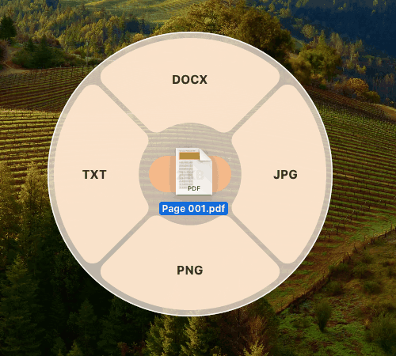
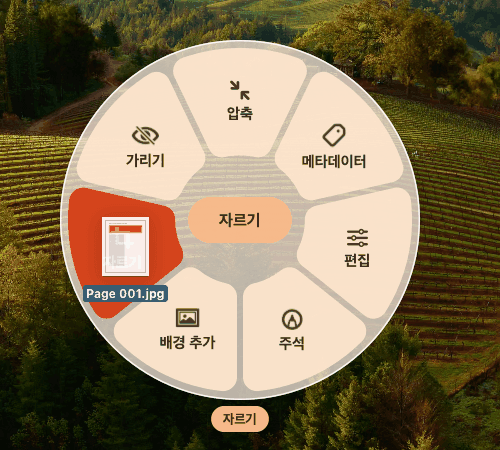
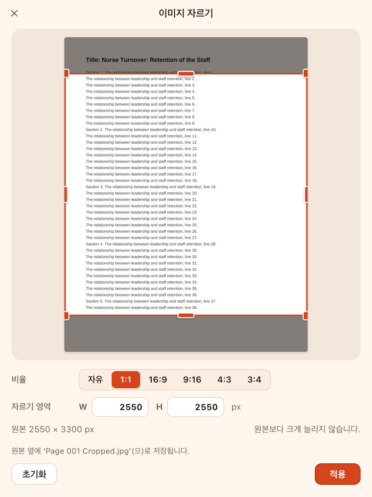
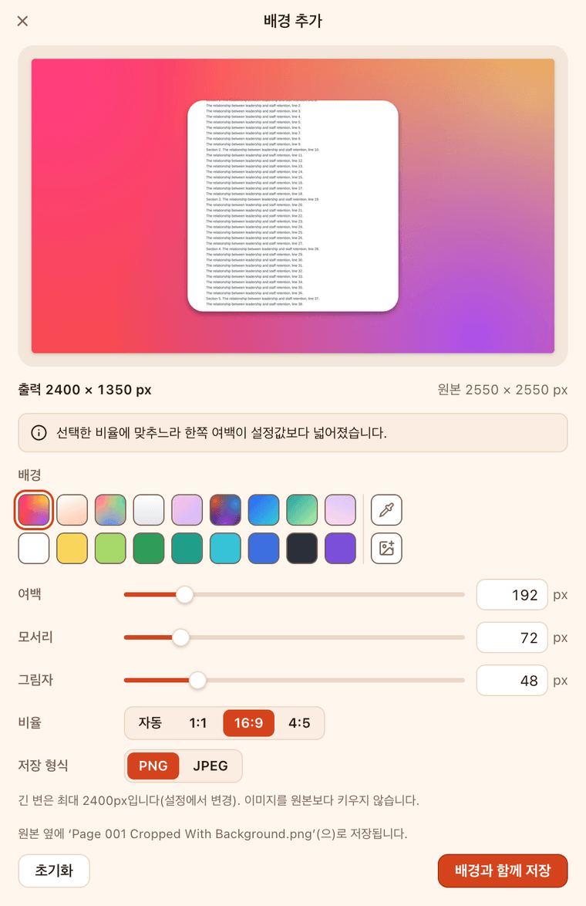
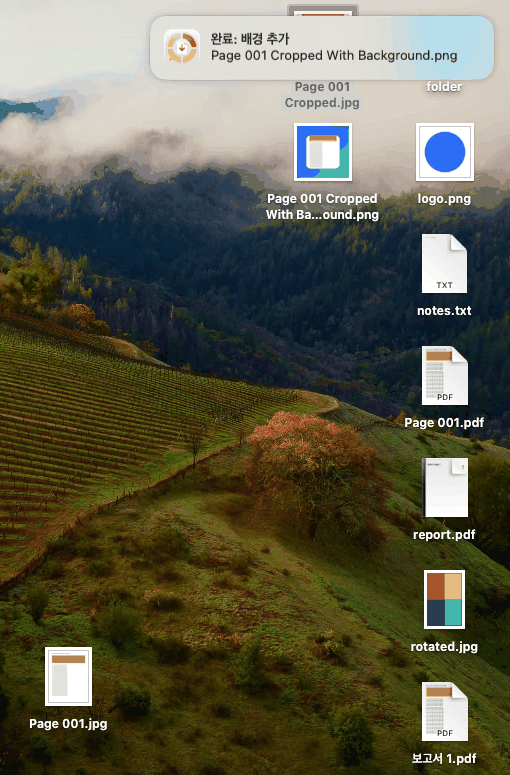
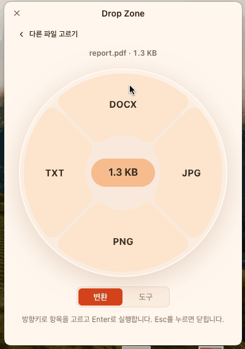
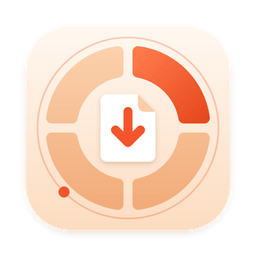

macOS Apple silicon
M1 이후의 Apple 칩을 쓰는 Mac · macOS 14 이상
GitHub Releases 열기무료 오픈 소스 데스크톱 앱 · macOS · Windows(베타)
OrbitDrop은 Finder나 파일 탐색기에서 파일을 드래그하는 동안 Shift를 누르면 포인터 옆에 원형 휠을 띄웁니다. 형식이나 도구 위에 놓으면 결과 파일이 원본 옆에 생기고, 원본은 그대로 남습니다.
사용법
따로 창을 열지 않아도 됩니다. 평소처럼 파일을 끌다가 키 하나만 더 누르세요.
Finder나 파일 탐색기에서 평소처럼 PDF나 이미지를 끌기 시작합니다. 여러 파일을 한꺼번에 끌어도 됩니다(일부 도구는 한 번에 한 파일).
포인터 옆에 변환 휠이 나타납니다. macOS에서는 Option+Shift를 누르면 도구 휠이 열립니다. 도구 메뉴 단축키는 설정에서 바꿀 수 있습니다. 키를 떼도 휠은 놓거나 취소할 때까지 남아 있습니다.
결과 파일이 원본과 같은 폴더에 생깁니다. 원본은 옮기거나 덮어쓰거나 지우지 않습니다. 휠 가운데에 놓으면 아무 일도 일어나지 않습니다.
드래그가 불편하다면
메뉴 막대(Windows는 알림 영역)의 OrbitDrop 아이콘에서 파일 열기…를 고르거나, 작은 Drop Zone 창에 파일을 놓아도 같은 휠을 쓸 수 있습니다. 이때는 방향키와 Enter로도 고를 수 있습니다.
변환
휠에는 지금 끌고 있는 파일에 실제로 쓸 수 있는 형식만 나타납니다. 확장자만 바꾸는 가짜 변환은 하지 않습니다.
| 원본 | 결과 | 참고 |
|---|---|---|
| JPG, PNG | 쪽마다 한 장(report-p001.jpg …), 300 또는 150 DPI | |
| TXT | 글자가 들어 있는 PDF만. 스캔한 PDF의 글자 인식(OCR)은 하지 않습니다. | |
| DOCX | 텍스트 중심. 원래 배치를 그대로 옮기지는 않습니다. | |
| JPG, PNG, WebP | 서로 변환 | 사진 방향(EXIF)을 반영합니다. JPG로 바꿀 때 투명한 부분은 배경색으로 채웁니다. |
| 이미지 | TIFF, AVIF, BMP | BMP는 원본으로도 읽습니다. |
| 이미지 | HEIC | macOS만. HEIC 원본도 읽습니다. |
| 이미지 여러 장 | 순서, 용지, 여백을 정해 한 파일로 묶습니다. | |
| 이미지 | DOCX | 그림으로 넣습니다(OCR 없음). |
Windows 판은 같은 변환 엔진을 쓰지만 실제 PC에서는 아직 확인하지 않았습니다(베타). HEIC는 Windows에서 지원하지 않습니다. 번들 엔진이 처리할 수 없는 칸은 휠에서 이유와 함께 비활성화됩니다. 글자 인식(OCR), 동영상·음성 변환, AI, 클라우드 기능은 없습니다.
도구
macOS에서는 이미지를 끌며 Option+Shift를 누르면 도구 휠이 열립니다. 도구 메뉴 단축키는 설정에서 바꿀 수 있습니다. 도구를 고르면 작은 편집 창이 열립니다.
photo Cropped.jpg처럼 원본 이름 뒤에 작업 이름을 붙여 원본 옆에 저장합니다.자유, 1:1, 16:9, 9:16, 4:3, 3:4 비율이나 픽셀 크기로 자릅니다.
프리셋·단색·이미지 배경에 여백, 둥근 모서리, 그림자를 더합니다. 미리 보기가 결과와 같습니다.
형식과 긴 변 크기를 고르면 저장하기 전에 예상 크기를 보여 줍니다.
카메라 정보와 위치(GPS)를 보여 주고, 메타데이터를 지운 사본을 만듭니다.
회전, 반전, 밝기, 대비, 채도를 조정합니다.
한글 텍스트, 화살표, 사각형을 그립니다. 실행 취소와 다시 실행을 지원합니다.
단색이나 모자이크로 가립니다. 결과에는 원본 썸네일과 메타데이터를 남기지 않습니다.
실제 화면
위의 휠 그림과 달리 아래는 모두 앱의 실제 화면입니다. 휠 두 장과 결과 화면은 macOS 14 가상 머신의 Finder에서 직접 드래그해 찍었습니다.






개인정보
OrbitDrop은 모든 변환과 편집을 내 컴퓨터에서 처리합니다.
파일 내용과 이름을 어디에도 보내지 않습니다. 인터넷에 연결되어 있지 않아도 모든 변환과 편집이 됩니다.
가입도 로그인도 없습니다.
사용 통계나 충돌 보고서를 보내지 않습니다. 설정, 작업 기록, 로그는 내 컴퓨터에만 저장됩니다.
네트워크를 쓰는 곳은 선택 사항인 업데이트 확인 하나뿐입니다. 이때 GitHub은 앱 버전과 IP 주소 같은 일반적인 접속 정보를 받습니다.
시스템 요구 사항

다운로드
무료입니다. 설치 파일은 GitHub Releases에서 받습니다.
곧 공개됩니다. 공개 소식과 설치 파일은 GitHub Releases에서 확인하세요.
M1 이후의 Apple 칩을 쓰는 Mac · macOS 14 이상
GitHub Releases 열기Intel 프로세서를 쓰는 Mac · macOS 14 이상
GitHub Releases 열기현재 사용자용 설치 · 관리자 권한 불필요
GitHub Releases 열기Apple silicon인지 Intel인지 모르겠다면 Apple 메뉴 › 이 Mac에 관하여를 여세요. ‘칩’ 항목에 Apple M1 같은 이름이 있으면 Apple silicon, ‘프로세서’ 항목에 Intel이 있으면 Intel입니다.
릴리스에 SHA256SUMS.txt가 있으면, 아래 명령으로 계산한 값을 그 파일에서 같은 파일 이름 줄의 값과 비교해 파일이 중간에 바뀌지 않았는지 확인할 수 있습니다. 두 값이 같아야 합니다.
shasum -a 256 ~/Downloads/OrbitDrop-*-mac-*.dmgGet-FileHash "$env:USERPROFILE\Downloads\OrbitDrop-*-setup.exe" -Algorithm SHA256릴리스에 SHA256SUMS.txt가 있으면 여기에 링크가 나타납니다. GitHub Releases에서도 볼 수 있습니다.
FAQ
허용해야 하는 권한은 없습니다. OrbitDrop의 전역 드래그는 손쉬운 사용(Accessibility)이나 입력 모니터링 권한 없이 동작하도록 만들어졌고, 실행할 때 권한 대화상자를 띄우지 않습니다. 전체 디스크 접근 권한도 요구하지 않습니다.
Windows에는 이런 권한 대화상자가 없습니다. 다만 OrbitDrop과 탐색기 중 한쪽만 관리자 권한으로 실행하면 드래그를 받을 수 없으니 둘 다 일반 권한으로 실행하세요.
macOS에서는 DMG를 열어 OrbitDrop을 응용 프로그램 폴더로 끌어 놓은 뒤 실행합니다. Windows 설치 프로그램은 현재 사용자용으로 설치하도록(기본 위치 %LOCALAPPDATA%\Programs\OrbitDrop) 만들어져 관리자 권한을 묻지 않습니다. 다만 Windows에서는 아직 실행해 보지 않았습니다(베타).
실행해도 창은 열리지 않습니다. 메뉴 막대(Windows는 작업 표시줄의 알림 영역)에 OrbitDrop 아이콘이 나타나면 준비된 것입니다. 바로 파일을 끌며 Shift를 눌러 보세요. 설정은 아이콘 메뉴의 설정…에 있고, ‘로그인할 때 OrbitDrop 실행’은 처음에 꺼져 있습니다.
Apple silicon Mac에서 Intel용을 실행하면 Rosetta 2가 번역하느라 첫 실행이 오래 걸리고(가상 머신에서 약 1분 40초), Apple silicon용을 설치하라는 알림이 뜹니다.
macOS — 화면 위쪽 메뉴 막대의 오른쪽에 있습니다. Dock에는 나타나지 않습니다. 메뉴 막대가 붐벼 아이콘이 가려졌다면 응용 프로그램 폴더에서 OrbitDrop을 한 번 더 여세요. 실행 중인 OrbitDrop이 Drop Zone 창을 띄웁니다.
Windows — 작업 표시줄 오른쪽 알림 영역에 있습니다. 보이지 않으면 위쪽 화살표(숨겨진 아이콘 표시)를 눌러 보세요. OrbitDrop을 한 번 더 실행해도 Drop Zone 창이 열립니다.
설정(settings.json), 작업 기록(history.json), 로그(logs/main.log), 캐시는 앱을 지워도 남습니다. 필요하면 직접 지우세요: ~/Library/Application Support/OrbitDrop, ~/Library/Preferences/io.github.keilvher1.orbitdrop.plist
설정 › 앱 › 설치된 앱 › OrbitDrop › 제거(또는 설치 폴더의 Uninstall OrbitDrop.exe). 제거 프로그램은 설치 폴더, 바로 가기, 제거 항목, 로그인할 때 실행하는 시작 항목을 지웁니다.
사용자 데이터 %APPDATA%\OrbitDrop(설정, 작업 기록, 로그, 캐시)은 남습니다. 함께 지우려면 그 폴더를 직접 지우거나 다음 명령으로 제거하세요(기본 설치 위치 기준).
"%LOCALAPPDATA%\Programs\OrbitDrop\Uninstall OrbitDrop.exe" --delete-app-data변환·편집 결과 파일은 원본 옆에 저장되므로 앱을 지워도 그대로 남습니다.
Windows 판은 아직 실제 Windows에서 실행해 보지 않았기 때문입니다. 설치 프로그램 설정과 Windows용 드래그 도우미 코드는 있지만, 도우미는 macOS에서 교차 컴파일해 공통 부분만 자동 테스트했고, 설치 프로그램은 Windows에서 아직 만들어 보지 않았습니다. 그래서 탐색기에서 파일을 끌며 휠을 띄우는 전역 드래그도 실제 PC에서 확인하지 못했습니다. macOS 판은 macOS 14와 macOS 26 가상 머신의 실제 Finder에서 드래그부터 변환·편집까지 확인했습니다.
문제를 발견하면 GitHub 이슈로 알려 주세요.
원본과 같은 폴더에 저장됩니다. 예를 들어 Page 001.pdf는 Page 001.jpg가 되고, 여러 쪽짜리 PDF는 report-p001.jpg, report-p002.jpg…가 됩니다. 도구 결과는 photo Cropped.jpg, photo Cropped With Background.png처럼 작업 이름이 붙습니다.
같은 이름의 파일이 있으면 덮어쓰지 않고 photo (2).jpg처럼 새 이름을 씁니다. 원본 폴더에 쓸 수 없으면 저장할 폴더를 묻습니다. 설정에서 저장 위치를 ‘매번 묻기’로 바꿀 수도 있습니다.